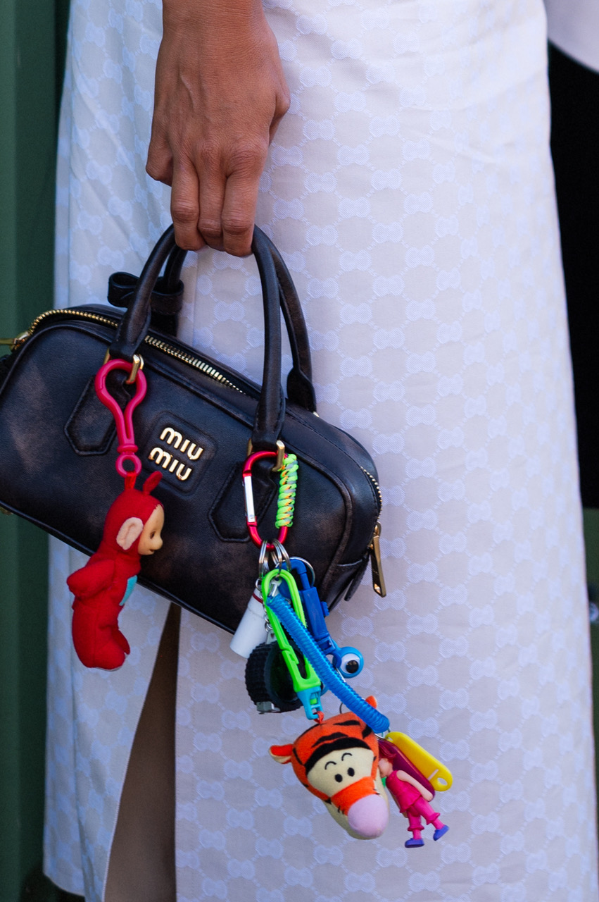
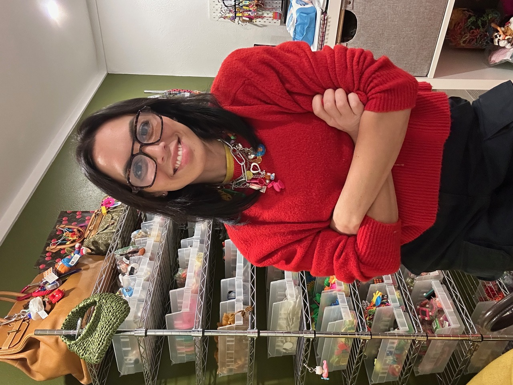
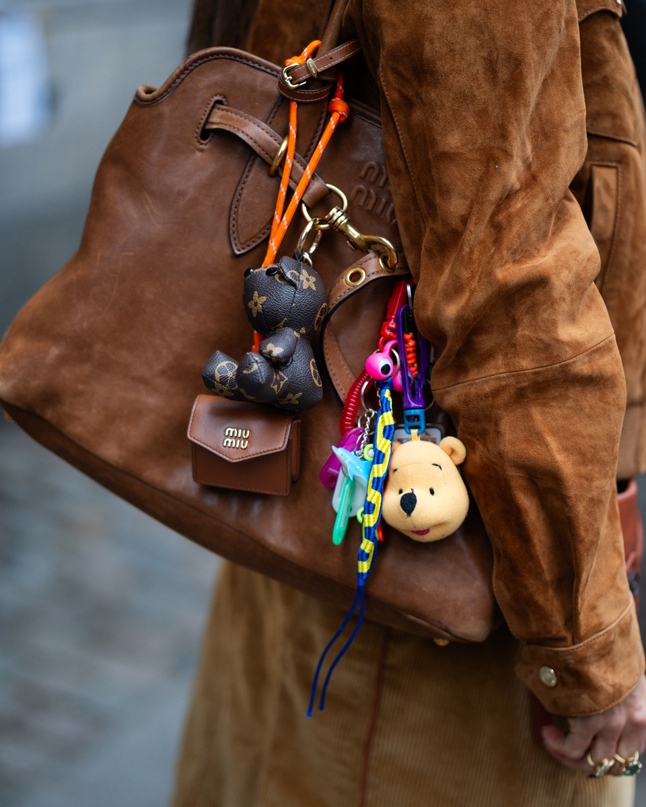
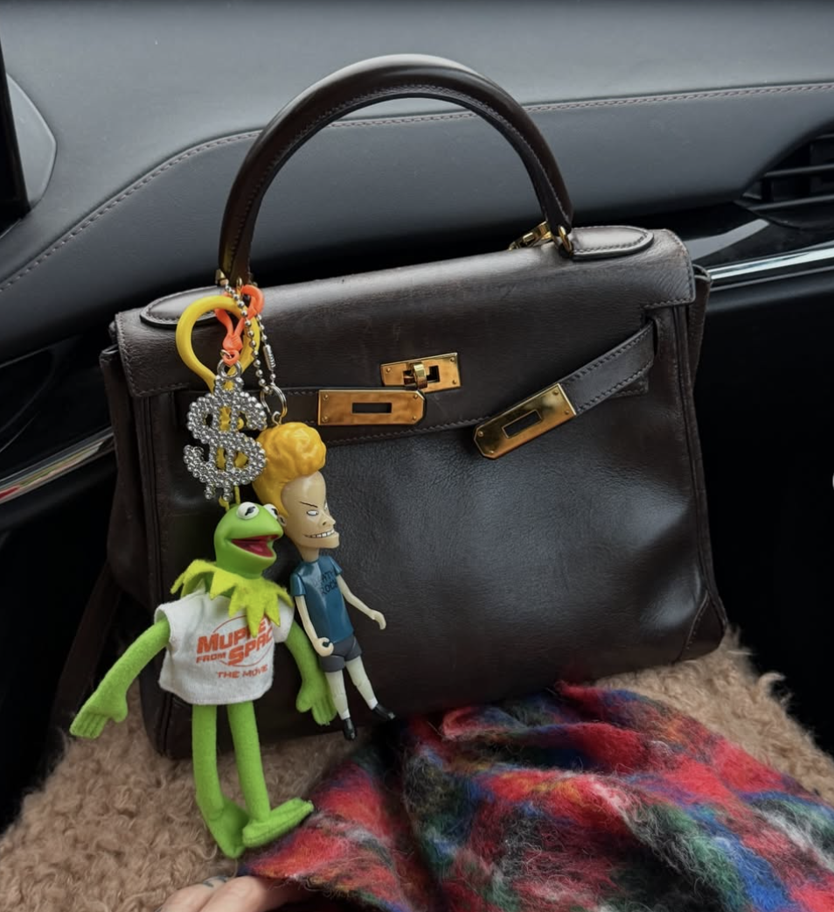
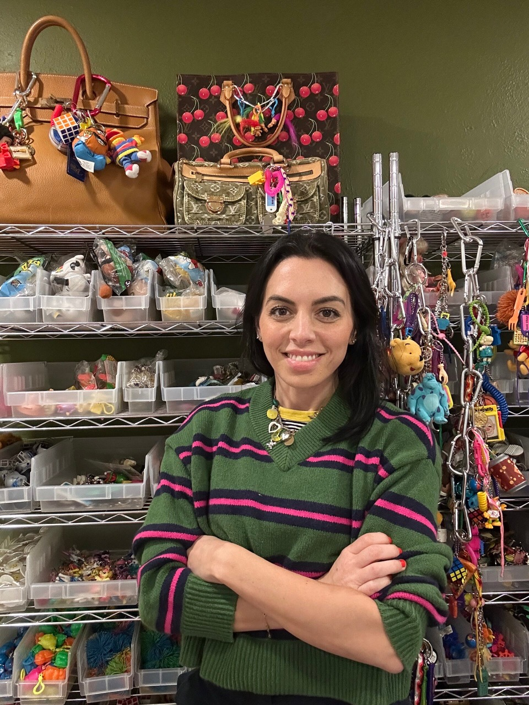

“In just over a year, I’ve built one of the largest online vintage keychain catalogs available. Bag Crap has been featured in Vogue (US, British, French, Italian), Cosmopolitan, GQ, L’Officiel, Teen Vogue, The Times, The Independent, and more.”—Entrepreneur Amanda Marcuson, Owner and Creative Director of Bag Crap.
We caught up with entrepreneur extraordinaire Amanda Marcuson who began Bag Crap in 2024 on Instagram from her living room. It is now a global phenomenon, a big-box business with sold-out statistics.
“I’ve created custom charms for Lily Allen, Marc Jacobs, Tracee Ellis Ross, Emma Roberts, Gabriella Karefa-Johnson, Bronwyn Newport, and others. I launched a capsule collection with Steve Madden and hosted an interactive charm bar during New York Fashion Week, partnered with brands like Cosmopolitan, The Ordinary, Calpak, Marko Monroe, the Dallas Cowboys Cheerleaders, and worked with Nordstrom on a Holiday 2025 capsule sold in their NYC flagship and online,” Marcuson told us from her Dallas home.

We asked Marcuson to tell us about her aha moment.
“I’ve always collected keychains and trinkets, but everything clicked when I saw bag charms on the Spring/Summer 2024 runways at Miu Miu and Balenciaga. I thought: if I’m going to put a bunch of junk on my bag, it should at least feel personal. The answer ended up being vintage Super Soaker keychains, an upcycled Happy Meal rollerblading Barbie, and an ‘I Love Bingo’ keychain—because I do love Bingo. People immediately started asking where they could buy them.”
CCM: What has been your career path?
AM: My career began in luxury accessories and handbags, then shifted into resale and auctions—working with Heritage Auctions, The RealReal, and Condé Nast’s Allure—where I developed a deep understanding of craftsmanship, provenance, and why people form emotional attachments to objects. But my real entrepreneurial origin story started much earlier.
At six years old, I was selling bracelets at local craft shows with my mom. A few years later, I took over her eBay store reselling Beanie Babies to save up for designer handbags. I’ve always had the entrepreneurial bug. I grew up in Metro Detroit in Birmingham and Bloomfield Hills, but knew New York City was calling. I attended the Fashion Institute of Technology, earning a degree in Fashion Merchandising and Planning.
While a student at the Fashion Institute of Technology, I launched a shockingly successful jewelry brand that was worn by Katy Perry, featured in the Victoria’s Secret Fashion Show, and appeared in editorials across Nylon, People, XXL, and more. I think of that business as a test run for what I’m doing now.
After graduating and spending nearly a decade in New York, I worked as Accessories Market Assistant at Condé Nast before pivoting fully into luxury resale. I spent the next decade helping grow the luxury handbag resale market with Heritage Auctions and The RealReal.
By 2024, I was Consignment Director for Luxury Handbags at Heritage Auctions in Dallas. I had traded up every bag I’d owned since I was thirteen to acquire my dream Birkins—and then I hit a wall. Luxury handbags used to signal status, taste, access. For the first time in my life, I was bored with bags. Probably overexposure. I needed a new creative outlet.
That’s when I realized this could be a side hustle alongside my 9–5. I wanted a brand name that was funny, blunt, and self-explanatory. Bag Crap was born in spring 2024. I launched @shopbagcrap on Instagram, running weekly story drops of one-of-a-kind bag charm packs made from vintage keychains, upcycled toys, and handcrafted lanyards. They sold out every week.
I sent charms to stylists, editors, and influencers who I knew would appreciate them. I learned early on that putting your product on the right people, at the right time, in the right place is everything. When Lori Hirshleifer posted and tagged her custom charms in July 2024, my DMs exploded. I had a 100+ person waitlist and no website.
That same summer, during Copenhagen Fashion Week, bag charms went global. I had styled two of the most photographed influencers there, and suddenly Bag Crap was everywhere—street style reports worldwide. British Vogue reached out for an interview, and on August 8, 2024, my feature ran on Vogue.com. Two weeks later, I left Heritage Auctions to run Bag Crap full time.
Scaling from my living room to a big-box retailer in a year and a half is something I’m incredibly proud of—but it also clarified what matters most. Today, the heart of Bag Crap is highly curated vintage drops, weekly charm pack releases, and custom commissions ranging from $200 to $1,500+, all sold through bagcrap.com.

CCM: When did your interest in vintage begin?
AM: Long before it was trendy. In high school, I spent weekends hopping thrift stores hunting for vintage designer bags, graphic tees, and pieces that felt undiscovered. In the early aughts, vintage was exclusive but accessible—and it helped shape my personal style.
My love of vintage toys and keychains is deeply nostalgic. My grandfather was a toy salesman in Livonia, Michigan in the ’90s and brought me samples of things like Etch-A-Sketches, Super Soakers, and miniature games before they hit stores. The fact that I now sell those same keychains thirty years later isn’t lost on me.
Vintage objects carry stories. They’ve lived lives. I’m drawn to the imperfect, the weird, the things that wouldn’t be manufactured today. There’s an honesty there that mass production often lacks—and it connects people through shared memory.

CCM: Why are bag charms such a huge sensation right now?
AM: Bag charms have always existed, but now they’re cultural. Accessories aren’t just finishing touches anymore—they’re identity markers. A bag charm takes something aspirational and makes it personal. It says “this is mine” without saying a word.
I like to say wearing bag charms is adult show-and-tell—especially when your Birkin is covered in vintage toys. They also let people refresh a bag without buying a new one, which is why luxury brands have leaned into charms as entry-level items. Miniature bags as charms are everywhere now, for a fraction of the price and size.
CCM: Did the trend originate in Asia?
AM: Absolutely. Much of the emotional philosophy comes from East Asia, especially Japan. “Cute” isn’t childish—it’s restorative. When people work hard, joy becomes essential. Charms act like emotional armor: tiny reminders of humor and play in a serious world. I joke that I run a very serious business selling very unserious products.
CCM: How do you source your charms?
AM: It’s part research, part treasure hunt, part instinct. I source globally—from estate sales, flea markets, warehouses, auctions, collectors, Instagram, Facebook—everywhere. I dig through massive junk lots daily, clean and refurbish pieces, and sometimes repair them entirely.
Some charms take years to find. Others show up when I least expect them. With handbags, I’d seen almost everything. With vintage keychains, I discover something new almost every day. If it doesn’t make me feel something, it doesn’t make it into Bag Crap. About 95% of what I sell is vintage or handcrafted in-house.
CCM: Do people change their charms often?
AM: All the time—and they should. Charms are jewelry for your bag. Some people switch them daily, seasonally, or with their mood. There are no rules.
Styling has evolved too—from maximalist statement sets, to plush-heavy moments, to sleeker chains with tiny trinkets. Because everything is made in-house, I can adapt designs in real time. The only rule is: wear what makes you happy.

CCM: Are certain charms especially meaningful to you?
AM: The chase is everything. Some pieces stay because they were impossible to find; others because they’re absurd. I love obscure cartoon characters, Beavis and Butt-Head, weird troll dolls, neon ’80s Hong Kong keychains, a hot-pink unicycle I found at a flea market, and unhinged ’80s and ’90s comedy keychains by Kalan—the kind you’d find at Spencer’s Gifts. If it makes me laugh or question its existence, I’m attached.
CCM: Who are your collectors?
AM: They’re diverse but share a strong point of view and sense of humor. Age-wise, it spans generations, though many are millennials since I curate heavily from the ’80s and ’90s.
Geographically, it’s global. Outside the U.S., my biggest markets are the U.K., Japan, and Dubai. Turning a discarded toy into something worn on a $25,000 Birkin in Dubai is both hilarious and deeply satisfying. I love extending the life of objects once considered junk and reframing them as luxury.
CCM: What are your biggest challenges and pleasures?
AM: The hardest part is scaling something so personal without losing its soul. There are easier ways to build a charm brand, but authenticity always wins.
The greatest pleasure is seeing people light up when they receive a piece and realizing they’re in on the joke. I get messages every day from people sharing memories tied to the charms. Building this without a playbook has been terrifying and exhilarating—and the support from strangers has carried me the whole way.
CCM: Can charms be worn beyond handbags?
AM: Absolutely. Shoes, belts, luggage, sunglasses, scarves, hoodies—everything’s fair game. I’ve been looping charms through denim buttonholes and belt loops lately. It’s not about gender; it’s about ownership and expression. Accessories help us tell our stories instantly—it’s show-and-tell for adults.

CCM: What role do brand collaborations play now?
AM: They’re huge. We create interactive DIY charm bars where people can sit down, craft, and play. We’ve done this with Steve Madden during New York Fashion Week, Cosmopolitan for Doechii’s summer cover, and brands like The Ordinary, New York or Nowhere, the Dallas Cowboys Cheerleaders, and The RealReal. Brands come to us because they want authenticity, personality, and something people actually want to engage with. Charm bars turn brand storytelling into something you can touch, personalize, and take home.
CCM: What’s next for Bag Crap?
AM: The next phase is experience-driven: more charm bars, live selling, pop-ups, brand activations, DIY kits, and pre-styled vintage handbags with charms included. I’m also developing a digital course and consulting service for creatives and small business owners who want to build memorable brands.
We loved Marcuson’s description of her workday:
Entrepreneurship is the hardest job I’ve ever had—but easily the most fulfilling.